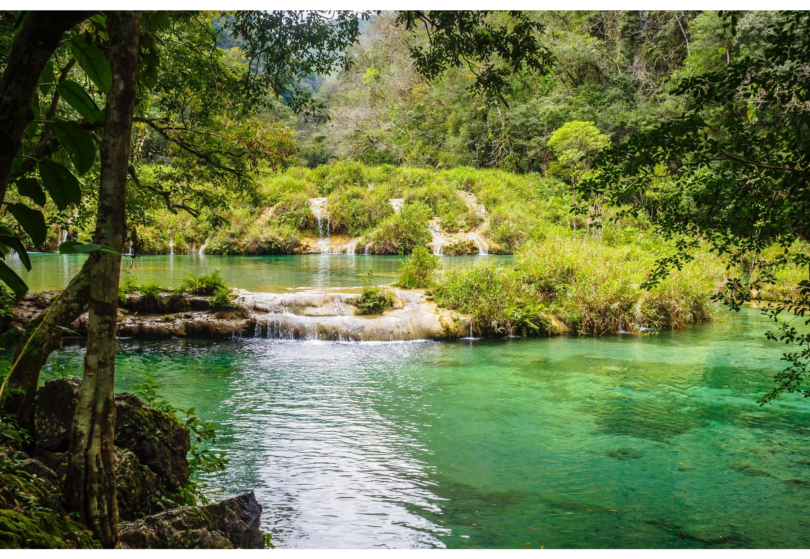
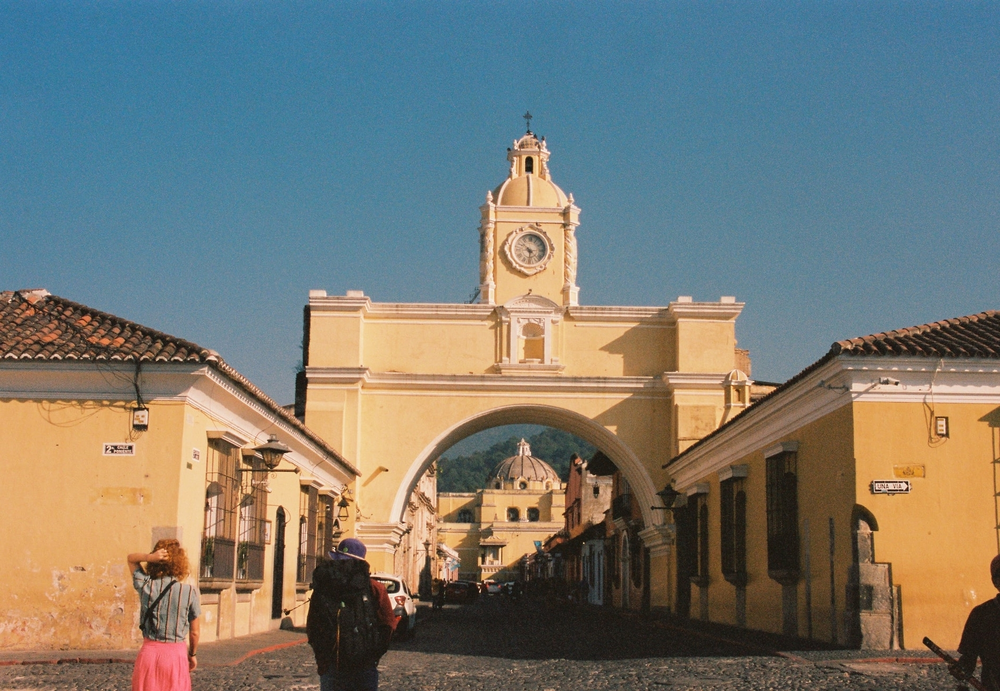
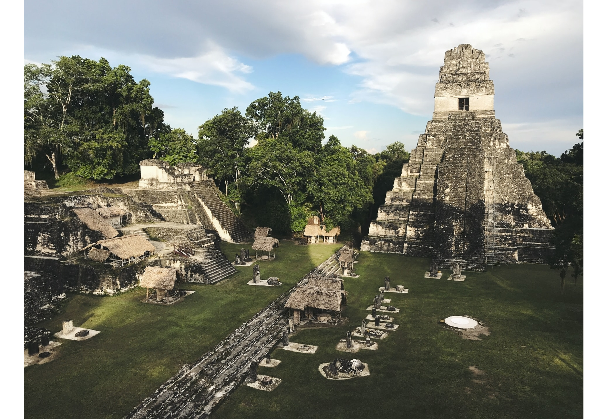

-
Semuc Champey
Semuc Champey é um monumento natural no departamento de Alta Verapaz, Guatemala, perto da cidade maia de Q'eqchi 'em Lanquín. Consiste em uma ponte natural de calcário de 300 m, sob a qual passa o rio Cahabón. No topo da ponte, há uma série de piscinas turquesas, uma atração popular para a natação.
-
Lago Atitlán

O lago de Atitlán é um grande lago endorreico situado nas terras altas do país Guatemala, no departamento de Sololá. Apesar de ser considerado o mais profundo dos lagos da América Central, o seu fundo não foi ainda completamente estudado e estima-se que a sua profundidade máxima seja de 340 metros.
-
Cidade de Antigua
Antigua é uma pequena cidade rodeada por vulcões no sul da Guatemala. É conhecida pelos edifícios coloniais espanhóis, muitos dos quais foram restaurados após um terramoto em 1773, que terminou o reinado com 200 anos de Antigua enquanto a capital colonial da Guatemala.
-
Ruínas de Tikal
Descubra os mistérios dos antigos maias com uma visita de dia inteiro ao sítio arqueológico de Tikal, em Flores. Aventure-se no Parque Nacional de Tikal, classificado pela UNESCO, para uma visita guiada às ruínas maias do parque, incluindo a fascinante Acrópole Central, o grandioso Templo II e o Mundo Perdido.